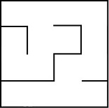
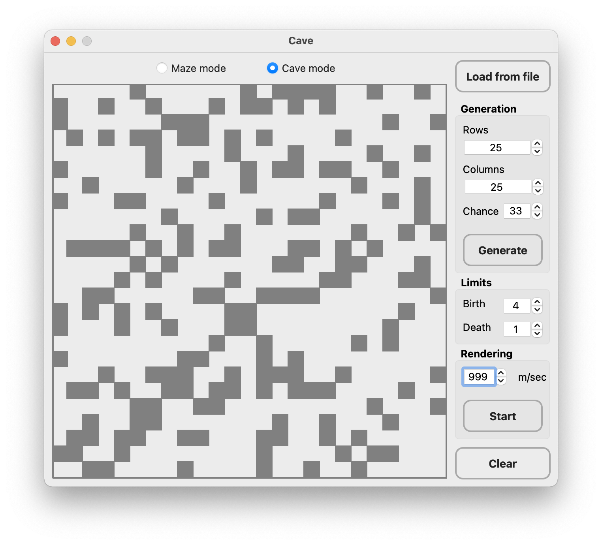
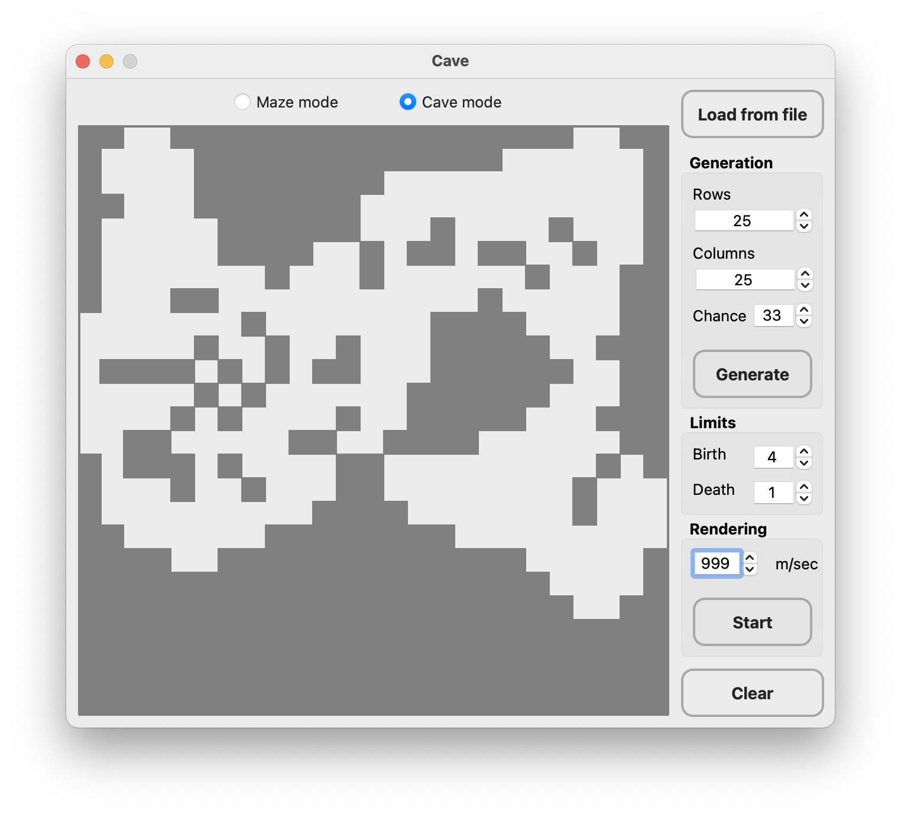

The program build with Makefile by target "install". The target "uninstall" delete the program.
The maze can be stored in a file as a number of rows and columns, as well as two matrices containing the positions of vertical and horizontal walls respectively. The first matrix shows the wall to the right of each cell, and the second - the wall at the bottom.
An example of such a file:
4 4
0 0 0 1
1 0 1 1
0 1 0 1
0 0 0 1
1 0 1 0
0 0 1 0
1 1 0 1
1 1 1 1
The maze described in this file:
The program allows:
Maximum size of the maze is 50x50.
 
A cave that has passed 0 simulation steps (only initialized) can be stored in the file as a number of rows and columns, as well as a matrix containing the positions of "live" and "dead" cells.
An example of such a file:
4 4
0 1 0 1
1 0 0 1
0 1 0 0
0 0 1 1
The cave described in this file:

The program allows:
The user sets the limits for "birth" and "death" of a cell, as well as the chance for the starting initialization of the cell, the "birth" and "death" limits can have values from 0 to 7.
There is a step-by-step mode for rendering the results of the algorithm in two variants:
Maximum size of the cave is 50 x 50.